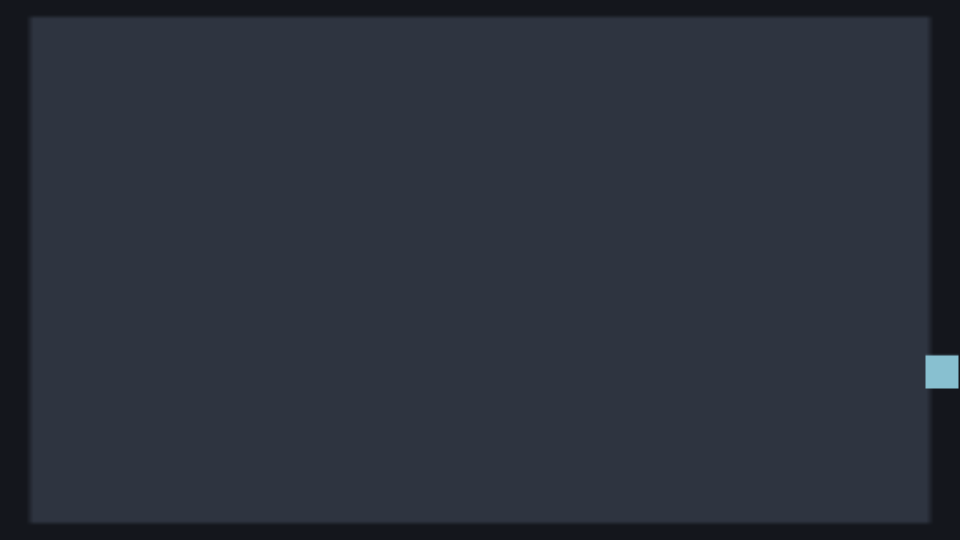
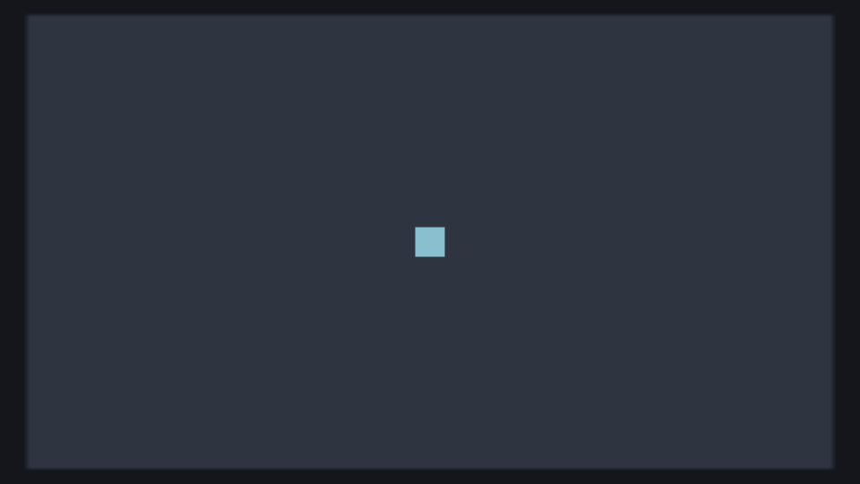

49 · Dungeon 1: A hero that moves
This is the first of six pages that build one complete top-down dungeon game, step by step, written the way you write Unity: MonoBehaviour, [SerializeField], Input.GetAxis, Time.deltaTime, Rigidbody2D.velocity, Instantiate, OnTriggerEnter2D, coroutines, a GameManager. Every line is explained and every part runs.
- A hero that moves (this page)
- Walls
- Camera and a bigger level
- Coins and score
- Enemies and health
- Light and shipping
Afterwards, Ember Crypt takes everything and builds a finished, good-looking game with the real pixel art. If you want a complete game first, play Vector Rocks.
You need to know what a variable and a function are. If you know Unity, you already know almost everything. Allow 20 minutes.
What you will build: a blue square that you steer with WASD or the arrow keys at the same speed on every computer, and that cannot leave the screen.

Download: Part 1 project, also in examples/series-dungeon/part1 of the engine. Unzip it, open nord.project.json in Nord and press Play.
1 A new project#
In the editor: start Nord and choose New project, type dungeon as the name, pick 2D and press Create. The new project opens with an empty scene.
Terminal (in the folder where the project should be created), as an alternative to the editor:
nord new dungeon -t 2dNow the project settings. In Unity this is Project Settings; in Nord it is the Project tab ▸ Project properties. We want a small, crisp screen that scales to fit any window, and no gravity, because we look at the dungeon from above:
- Game size:
640×360. - Scaling:
fit. - Pixel art: off.
- Background:
#14161c. - Physics:
arcade, gravity Y:0. - Press Apply project properties.
In the file nord.project.json (open it in a text editor to check what the editor wrote):
"display": { "width": 640, "height": 360, "scale": "fit", "pixelArt": false, "background": "#14161c" },
"physics": { "engine": "arcade", "gravity": [0, 0, 0] },The input actions (left, right, up, down) that Input.GetAxis reads are already in every new project; you can see them in Project tab ▸ Input Manager (actions and keys).
2 The scene#
A scene is a list of GameObjects (Nord calls them entities): a name, a position, components and scripts. The new project already has an empty main scene. Build it in the editor:
- Floor. Hierarchy ▸ + Create ▸ Sprite. In the Inspector, rename it
Floor(F2 in the Hierarchy also renames). Set Position to320, 180, -5. In thespritecomponent set size640, 360and tint#2e3440. - Hero. Hierarchy ▸ + Create ▸ Sprite, rename it
Hero, Position320, 180, 2, sprite size24, 24, tint#88c0d0. In the Inspector Tags, add the tagHero. - Camera. Hierarchy ▸ + Create ▸ Camera, rename it
Camera, Position320, 180, 10. Itscameracomponent has zoom1. - Save the scene with File ▸ Save all (Cmd+S).
| Name | Position (x, y, z) | Sprite size | Tint | Notes |
|---|---|---|---|---|
Floor |
320, 180, -5 | 640 × 360 | #2e3440 |
the background |
Hero |
320, 180, 2 | 24 × 24 | #88c0d0 |
tag Hero |
Camera |
320, 180, 10 | a camera component, zoom 1 |
In the file scenes/main.scene.json (open it in a text editor to check): the Hero entity looks like this. Floor and Camera have the same shape.
{ "name": "Hero", "tags": ["Hero"],
"transform": { "pos": [320, 180, 2], "rot": [0, 0, 0], "scale": [1, 1, 1] },
"components": [ { "type": "sprite", "texture": "assets/sprites/square.png", "size": [24, 24], "tint": "#88c0d0", "alpha": 1 } ],
"scripts": [] }What is z for? In 2D,
zis the draw order: bigger is in front (like Unity's Order in Layer). The floor at −5 is behind everything.
Unity difference: y points down. (0, 0) is the top-left of the screen, like on a web page, and
ygrows downwards. (320, 180) is the middle of a 640 × 360 screen. In Unity,Vector2.upis +y; here it is −y. This is the only big difference you will meet in the whole series, and each time it matters I point it out.
Press Play: a dark floor and a blue square. Nothing moves.
3 The first script#
Create scripts/hero.js and attach it to Hero with + Add script. A script is a class that extends MonoBehaviour:
import { MonoBehaviour } from 'nord';
export default class Hero extends MonoBehaviour {
Update() { /* every frame */ }
}The Unity methods you know work with the same names and the same meaning: Awake, Start, Update, FixedUpdate, LateUpdate, OnEnable, OnDisable, OnDestroy, OnTriggerEnter, OnCollisionEnter, OnMouseDown.
4 Moving#
Input.GetAxis('Horizontal') and ('Vertical') return −1 … 1 for A/D, W/S, the arrows and a gamepad stick, just like Unity's default Input Manager. Note the import: Nord's Input for Unity code is called UnityInput, so we rename it on import.
File: scripts/hero.js (new file, the whole file; attach it to Hero)
import { MonoBehaviour, SerializeField, UnityInput as Input, Time, Mathf, Vector2, Vector3 } from 'nord';
export default class Hero extends MonoBehaviour {
static attributes = SerializeField({ speed: 160 }); // [SerializeField] float speed = 160;
Update() {
// Input.GetAxis gives -1..1 from A/D, W/S, the arrows and a gamepad stick. ClampMagnitude stops diagonals from being 41% faster.
const move = Vector2.ClampMagnitude(new Vector2(Input.GetAxis('Horizontal'), Input.GetAxis('Vertical')), 1);
const p = this.position;
this.position = new Vector3(
Mathf.Clamp(p.x + move.x * this.speed * Time.deltaTime, 12, 628), // keep the 24 px hero on the 640 x 360 screen
Mathf.Clamp(p.y - move.y * this.speed * Time.deltaTime, 12, 348), // minus: Unity's y points up, Nord's screen y points down
p.z);
}
}In the editor: select Hero, then Inspector ▸ + Add script ▸ scripts/hero.js. The scene or prefab file then lists the script under "scripts".
Walk through it:
static attributes = SerializeField({ speed: 160 })is[SerializeField] float speed = 160;. The field appears in the Inspector with that default, you can change it while the game runs, the value is saved in the scene, and you read it asthis.speed.new Vector2(h, v)is the move input.Vector2.ClampMagnitude(…, 1)limits its length to 1. Without it, holding two keys gives(1, 1)which is 1.41 long: the hero would move 41% faster diagonally. This is the classic bug of beginner top-down games.Time.deltaTimeis the seconds since the last frame.speed * Time.deltaTimeis the distance to move this frame: at 60 fps 160 × 0.0167 ≈ 2.7 pixels, at 144 fps 1.1 pixels, and the speed on the screen is the same. A speed is always multiplied byTime.deltaTime.this.positionis aVector3liketransform.position. You cannot changeposition.xalone (it is a copy); assign a whole new vector, as in Unity.Mathf.Clamp(value, 12, 628)keeps the 24 px hero inside the screen: its centre must stay 12 px from every edge. A temporary fence; real walls come next.p.y − move.y * …has a minus because Unity's up is +1 on the Vertical axis, but on a Nord screen up is −y.
Press Play and hold D: the square slides to the right edge and stops.

5 Check yourself#
- W and D together: the hero moves diagonally at the same speed as straight.
- Change
speedto 400 in the Inspector while playing: the hero is faster at once. - Open
scenes/main.scene.jsonin a text editor: your three entities are plain JSON. Scenes merge in Git.
If nothing moves, click once inside the Game view: the game only receives the keyboard while it has focus.
What you learned#
- A scene is a list of GameObjects; behaviour is MonoBehaviours.
[SerializeField]isstatic attributes = SerializeField({ … }).Input.GetAxis+Vector2.ClampMagnitude+Time.deltaTimeis how every character moves.- The screen's y points down.
Next: Part 2, walls.